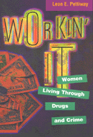

Five female law-breakers describe their lives in their own words
Five female law-breakers describe their lives in their own words


 Five female law-breakers describe their lives in their own words
Five female law-breakers describe their lives in their own words

|  |
Workin' ItWomen Living Through Drugs and CrimeLeon E. Pettiwaypaper EAN: 978-1-56639-580-9 (ISBN: 1-56639-580-1) |
"When I was growing up, my mother wanted me to grow up and meet a nice guy, marry him and have babies and be happy."
These are the words with which Margaret, a thirty-three-year-old cocaine-using prostitute, begins her story. In this book she and four other women, all inner-city hustlers, describe their lives, how they came to be where they are, and where they hope to go.
Margaret, Charlie, Virginia, Tracy, and Laquita are all drug users who are involved in regular criminal activity: prostitution, burglary, shoplifting, robbery, drug selling, petty theft, and various kinds of fraud. Four of the women are black; one is white and Puerto Rican. While all five have been involved in same-sex relationships, three are primarily straight and two are primarily lesbian. They come from working-class or welfare families; some women characterize their mothers as strict, abusive, intolerant, and distant while other mothers are characterized as being concerned, religious, and loving. The women talk frankly about their drug use, their sexual and criminal activities, their childhoods, their school and work experiences, their neighborhoods, their personal relationships with their families of origin, children, partners, their fears and future goals, and the ordinary trappings of their lives.
While these accounts describe lives lived at the margins of society, they also reveal women who practice self-evaluation. These are women who have a deep understanding of individual accountability and responsibility. These accounts are connected by themes of violence and poverty, but they are also connected by the variety and richness of these women's lives. The women also assert a control over their activities and talk of independent judgment in terms that we imagine are reserved for men. There is a tendency in criminology to treat the data generated by research on men as fundamentally true for women as well. By allowing female law-breakers to describe their lives in their own way, Pettiway underlines not only their differences from men but also their differences from each other.
However, their stories also reveal their common humanity and their profound will to survive despite all obstacles. These women manage to live self-defined and self-validated lives in a world even more turbulent than that of their mainstream sisters. They share a web of experiences created out of race and ethnicity, sexual orientation, drug use, and urbanization that provides them with meaning and courage. They speak movingly about guilt and responsibility, about rape and intimacy, and about ambition and despair. Through their stories we can grasp the traumas and turning points that lead us all to make bad decisions as well as those ideals and inspirations that can help to redeem us.
Excerpt available at www.temple.edu/tempress
Acknowledgments
Introduction
1. Margaret
2. Charlie
3. Virginia
4. Tracy
5. Laquita
 | Leon E. Pettiway is Associate Professor, Department of Criminal Justice, Indiana University, Bloomington. He is the author of Honey, Honey, Miss Thang (Temple), which was nominated for the 1996 Lambda Literary Award for books on transgender. |
Women's Studies
Law and Criminology
Urban Studies
© 2015 Temple University. All Rights Reserved. This page: http://www.temple.edu/tempress/titles/1364_reg.html.